콘크리트산업기사 (2016-08-21 기출문제)
1과목: 콘크리트재료 및 배합
1. 잔골재의 체가름 시험에 대한 설명으로 틀린 것은?
- 조립률을 구하기 위해 80mm~0.08mm체까지 전체 8개의 체가 필요하다.
- 잔골재의 체가름 시험결과를 가지고 입도분포 곡선을 그릴 수 있다.
- 분취한 시료를 (1⑤±5)℃에서 24시간, 일정질량이 될 때까지 건조시키고, 건조 후 시료는 실온까지 냉각시킨다.
- 1.2mm체를 5%(질량비)이상 남는 잔골재 시료의 최소 건조질량은 500g이다.
(정답률: 90%)

2. 콘크리트의 단위잔골재량과 단위굵은골재량이 각각 700kg/m3과 1090kg/m3이며, 잔골재의 밀도는 2.62g/m3, 굵은골재의 밀도는 2.64g/m3일 때 잔골재율(s/a)은?
- 39%
- 41%
- 43%
- 45%
(정답률: 59%)
3. 콘크리트의 배합설계에 관하여 옳지 않은 것은?
- 물-결합재비는 소요의 강도, 내구성, 수밀성 및 균열저항성 등을 고려하여 정하여야 한다.
- 단위수량은 되도록 작게 한다.
- 잔골재율은 되도록 작게 한다.
- 공기량은 되도록 작게 한다.
(정답률: 64%)
4. 콘크리트용 고로슬래그 미분말(KS F 2563)에 대한 규정 중 정의로 틀린 것은?
- 용광로에서 선철이 생산될 때 부산되는 용융상태의 고로슬래그를 물로 급랭시킨 것을 고로 수쇄 슬래그라고 한다.
- 고로 수쇄 슬래그를 건조 분쇄한 것 또는 여기에 석고를 첨가한 것을 고로슬래그 미분말이라고 한다.
- 고로슬래그 미분말의 폼질 시험에서 보통 포틀랜드 시멘트를 사용하여 제작한 기준이 되는 모르타르를 기준 모르타르라고 한다.
- 기준 모르타르의 플로값에 대한 시험 모르타르의 플로값 비를 백분율로 표시한 것을 활성도 지수라고 한다.
(정답률: 70%)
5. 어떤 포틀랜드 시멘트를 화학 분석한 결과, 산화나트륨(Na2O)이 0.3%이고, 산화칼륨(K2O)이 0.31%인 것으로 분석되었다. 이 포틀랜드 시멘트의 전(全) 알칼리 함량(%)은?
- 0.2%
- 0.5%
- 0.6%
- 0.9%
(정답률: 56%)
6. 콘크리트 배합의 보정방법으로 잘못된 것은?
- 모래의 조립률이 클수록 잔골재율도 크게 한다.
- 공기량이 클수록 잔골재율도 크게 한다.
- 물-결합재비가 클수록 잔골재율도 크게 한다.
- 부순모래를 사용할 경우 잔골재율은 크게 한다.
(정답률: 46%)
7. 일반적으로 시멘트 질량의 5% 이상 사용하므로 콘크리트 배합계산에 고려해야 하는 재료가 아닌 것은?
- 화산재
- 플라이애쉬
- 규산질 미분말
- 방수제
(정답률: 72%)
8. 굵은골재의 단위 용적 질량시험에서 용기의 부피가 10.0L, 용기안의 시료가 질량이 10.0kg이었다. 이 골재의 흡수율이 2.0%이고 표면건조포화상태의 밀도가 2.6g/m3이라면 실적률은?
- 39.2%
- 43.2%
- 47.2%
- 51.2%
(정답률: 53%)
9. 함수량이 12.5%인 잔골재가 절대건조 상태에서 300g일 때 이 골재의 습윤상태 중량(g)은?
- 309.7g
- 312.9g
- 337.5g
- 348.6g
(정답률: 63%)
10. 레미콘의 혼합에 사용되는 물로써 적합하지 않은 것은?
- 품질시험을 행하지 않은 상수돗물
- 품질시험을 행하지 않은 회수수
- 모르타르의 압축 강도비가 재령 7일 및 28일에서 100%인 지하수
- 시멘트 응결시간의 차가 초결은 30분 이내, 종결은 60분 이내인 하천수
(정답률: 86%)
11. 배합수 내의 불순물 영향을 올바르게 나타낸 것은?
- 염화나트륨-장기강도 촉진
- 염화암모늄-응결지연
- 황산칼슘-응결촉진
- 질산아연-초기강도 증가
(정답률: 70%)
12. 섬유보강 콘크리트에 사용되는 섬유 중 무기계섬유에 포함되지 않는 것은?
- 감섬유
- 비닐론섬유
- 유리섬유
- 탄소섬유
(정답률: 75%)
13. 콘크리트용 혼화재로 플라이애시를 사용하려고 할 때 주의사항으로 틀린 것은?
- 플라이애시는 미연소 탄소분이 포함되어 있어서 소요공기량을 얻기 위한 AE제의 사용량이 증가된다.
- 플라이애시를 사용한 콘크리트는 운반 중에 AE제의 흡착에 의하여 공기량이 크게 증가되는 문제점이 있다.
- 플라이애시는 품질 변동이 크게 되기 쉬우므로 사용 시 품질을 확인할 필요가 있다.
- 플라이애시는 보존 중에 입자가 응집하여 고결하는 경우가 생기므로 저장에 유의해야 한다.
(정답률: 57%)
14. 잔골재 유기불순물 시험에 사용되는 식별용 표준색 용액제조에 사용되는 용액이 아닌 것은?
- 알코올 용액
- 페놀프탈레인 용액
- 탄닌산 용액
- 수산화나트륨 용액
(정답률: 69%)
15. 시멘트 종류별 특성에 대한 설명으로 틀린 것은?
- 고로슬래그 시멘트 중의 고로슬래그는 잠재수경성을 갖는다.
- 백색포틀랜드시멘트에서는 Fe2O3 양이 보통포틀랜드시멘트보다 적다.
- 조강포틀랜드시멘트는 조강성을 얻기 위하여 보통포틀랜드시멘트보다 분말도를 작게 한다.
- 중용열포틀랜드시멘트는 일반적으로 조성광물 중 C2S 양이 보통 포틀랜드시멘트보다 많다.
(정답률: 70%)
16. 어느 레미콘 공장에서 사용 중인 상태의 잔골재 시료 1080g을 채취하여 시험한 결과, 표면건조포화상태의 질량은 1030g, 절대건조상태의 질량은 1000g이었다. 이 시료의 흡수율, 표면수율로 옳은 것은?
- 흡수율=8.0(%), 표면수율=4.9(%)
- 흡수율=8.0(%), 표면수율=5.3(%)
- 흡수율=3.0(%), 표면수율=5.3(%)
- 흡수율=3.0(%), 표면수율=4.9(%)
(정답률: 65%)
17. 감수제의 사용 효과에 대한 설명으로 옳은 것은?
- 시멘트 입자를 분산시켜 단위수량을 감소시킨다.
- 콘크리트 흡수성과 투수성을 줄일 목적으로 사용한다.
- 응결을 늦추기 위한 목적으로 사용한다.
- 사용량이 비교적 많아서 배합 계산 시 고려한다.
(정답률: 61%)
18. 프리캐스트 교량 부재를 만드는 회사에서 거더와 바닥판에 사용될 콘크리트를 각각 설계기준강도 50MPa과 30MPa로 주문하였을 때 거더와 바닥판에 사용될 각각의 콘크리트의 배합강도로 가장 적합한 것은? (단, 30회 이상의 압축강도의 시험으로부터 구한 압축강도 표준편차 S=2.7MPa이다.)
- 거더 54MPa, 바닥판 34MPa
- 거더 54MPa, 바닥판 32MPa
- 거더 52MPa, 바닥판 34MPa
- 거더 52MPa, 바닥판 32MPa
(정답률: 52%)
19. 시방 배합설계 결과 단위잔골재량이 600kg/m3, 단위굵은골재량이 1200kg/m3이었다. 골재의 체가름시험 결과, 현장의 잔골재는 5mm체에 남는 것을 2% 포함하며, 굵은골재는 5mm체를 통과하는 것을 4% 포함하고 있다. 이 경우 시방배합을 현장배합으로 수정하여 단위골재량 x와 단위굵은골재량 y를 구하면?
- x=562kg/m3, y=1238kg/m3
- x=574kg/m3, y=1226kg/m3
- x=600kg/m3, y=1200kg/m3
- x=636kg/m3, y=1164kg/m3
(정답률: 53%)
20. 한국산업규격 KS L 5110 시멘트 비중시험 방법에 대한 설명으로 틀린 것은?
- 포틀랜드시멘트는 약 64g을 사용한다.
- 시멘트 비중병은 르샤틀리에 플라스크를 사용한다.
- 시멘트 비중병에 시멘트를 넣기 전에 물을 투입하여야 한다.
- 시멘트 비중시험 시 시멘트를 넣는 비중병을 조금 기울여 굴리거나 천천히 수평이 되도록 돌려서 기포를 제거해야 한다.
(정답률: 80%)
2과목: 콘크리트제조, 시험 및 품질관리
21. 다음 중 계량값 관리도에 속하는 것은?
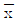
-R 관리도- U 관리도
- P 관리도
- Pn 관리도
(정답률: 67%)
22. 굳지 않은 콘크리트의 공기량시험(질량방법, KS F2409)에서 용기에 시료를 채우고, 진동기로 다지는 경우에 대한 설명으로 틀린 것은?
- 시료를 용기의 1/3씩 넣고 진동기로 진동다짐을 한다.
- 위층의 콘크리트를 다질 때, 진동기의 앞끝이 거의 아래층의 콘크리트에 이르는 정도로 한다.
- 진동시간은 콘크리트 표면에 큰 기포가 없어지는데 필요한 최소 시간으로 한다.
- 다진 후에는 콘크리트 중에 빈 틈새가 남지 않도록 진동기를 천천히 빼낸다.
(정답률: 39%)
23. 콘크리트의 건조수축은 시멘트, 골재의 성질, 콘크리트의 배합 등에 따라 크게 변화하며 콘크리트 부재에서 균열발생의 원인이 되고, 내구성에도 나쁜 영향을 미치게 된다. 이러한 건조수축의 정도를 평가하기 위하여 실시하는 시험은?
- 콘크리트의 길이변화 시험
- 콘크리트의 블리딩 시험
- 로스앤젤레스 마모 시험
- 마살 안정도 시험
(정답률: 42%)
24. 레디믹스트 콘크리트 품질 중 염화물 함유량에 대한 설명으로 옳은 것은?
- 레디믹스트 콘크리트의 염화물 함유량은 염소이온(Cl-)량으로써 0.03kg/m3이하로 한다. 다만, 구입자의 승인을 얻은 경우에는 0.06kg/m3 이하로 할 수 있다.
- 레디믹스트 콘크리트의 염화물 함유량은 염소이온(Cl-)량으로써 0.10kg/m3이하로 한다. 다만, 구입자의 승인을 얻은 경우에는 0.30kg/m3 이하로 할 수 있다.
- 레디믹스트 콘크리트의 염화물 함유량은 염소이온(Cl-)량으로써 0.30kg/m3이하로 한다. 다만, 구입자의 승인을 얻은 경우에는 0.60kg/m3 이하로 할 수 있다.
- 레디믹스트 콘크리트의 염화물 함유량은 염소이온(Cl-)량으로써 0.60kg/m3이하로 한다. 다만, 구입자의 승인을 얻은 경우에는 0.90kg/m3 이하로 할 수 있다.
(정답률: 71%)
25. 콘크리트의 강도 중 가장 큰 값을 가지는 것은?
- 전단강도
- 압축강도
- 휨강도
- 인장강도
(정답률: 70%)
26. 다음 중 KS F 4009에서 규정하고 있는 레디믹스트 콘크리트의 종류가 아닌 것은?
- 보통 콘크리트로써 호칭강도 27Map인 콘크리트
- 경량 콘크리트로써 호칭강도 40MPa인 콘크리트
- 포장 콘크리트로써 호칭강도 24MPa인 콘크리트
- 고강도 콘크리트로써 호칭강도 60MPa인 콘크리트
(정답률: 41%)
27. 콘크리트의 압축강도 시험결과가 다음 표와 같다. 이 콘크리트의 강도에 대한 변동계수는? (단, 표준편차 계산은 불편분상에 의한다.)
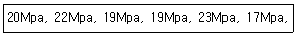
- 4.8%
- 11.0%
- 24.0%
- 36.5%
(정답률: 48%)
28. 침하균열의 방지 대책으로 옳지 않은 것은?
- 균열을 조기에 발견하고, 각재 등으로 두드리거나 흙손으로 눌러서 균열을 폐색시킨다.
- 단위수량을 될 수 있는 한 크게 하고, 슬럼프가 작은 콘크리트를 잘 다짐해서 시공한다.
- 침하 종료 이전에 급격하게 굳어져 점착력을 잃지 않는 시멘트, 혼화제를 선정한다.
- 타설 속도를 늦게 하고 1회 타설 높이를 작게한다.
(정답률: 75%)
29. 콘크리트의 알칼리 골재반응을 유발시키는 요인으로 거리가 먼 것은?
- 골재 중에 유해한 반응광물이 있을 경우
- 시멘트 및 그 밖의 재료에서 공급되는 알칼리량이 일정량 이상 있을 경우
- 구조적 구속이 크고, 비교적 온도가 낮을 경우
- 반응을 촉진하는 수분이 있을 경우
(정답률: 66%)
30. 레디믹스트콘크리트(KS F 4009)의 품질규정 중 콘크리트의 종류에 따른 공기량에 대한 설명으로 옳은 것은?
- 보통 콘크리트의 경우 공기량 4.5%이고, 공기량의 허용 오차는 ±1.5%이다.
- 경량 콘크리트의 경우 공기량 6.5%이고, 공기량의 허용 오차는 ±2.0%이다.
- 포장 콘크리트의 경우 공기량 3.5%이고, 공기량의 허용 오차는 ±1.5%이다.
- 고강도 콘크리트의 경우 공기량 5.5%이고, 공기량의 허용 오차는 ±2.0%이다.
(정답률: 87%)
31. 콘크리트 비비기에 대한 설명으로 틀린 것은?
- 비비기 시간에 대한 시험을 실시하지 않은 경우 그 최소 시간은 강제식 믹서일 경우 1분 30초 이상을 표준으로 한다.
- 비비기는 미리 정해둔 비비기 시간의 3배 이상 계속하지 않아야 한다.
- 비비기를 시작하기 전에 미리 믹서 내부를 모르타르로 부착시켜야 한다.
- 연속믹서를 사용할 경우, 비비기 시작 후 최초에 배출되는 콘크리트를 사용하지 않아야 한다.
(정답률: 73%)
32. 슬럼프 콘에 콘크리트를 채우기 시작하여 슬럼프콘을 들어올려 종료할 때까지의 시간의 기준으로 옳은 것은?
- 1분 이내
- 1분 30초 이내
- 2분 이내
- 3분 이내
(정답률: 70%)
33. 굳지 않은 콘크리트의 성질에 관한 설명 중 틀린 것은?
- 워커빌리티(Workability)는 작업의 난이도 및 재료분리에 저항하는 정도를 나타내며, 골재의 입도와 밀접한 관계가 있다.
- 피니셔빌리티(Finshability)란 굵은골재의 최대치수, 잔골재율, 골재입도, 반죽질기 등에 의한 마감성의 난이를 표시하는 성질이다.
- 단위수량이 많을수록 반죽질기는 커지고, 작업성은 용이해지나 재료분리를 일으키기가 쉽다.
- 콘크리트의 온도가 높을수록 반죽질기도 커지며, 공기량에 비례하여 슬럼프값이 커진다.
(정답률: 64%)
34. 압력법에 의한 굳지 않은 콘크리트의공기량 시험에서 골재 수정 계수의 측정을 위해 사용하는 굵은 골재의 질량(mc)을 구하는 식은? (단, 사용하는 기호에 대한 정의는 아래의 표와 같다.)
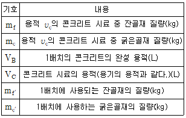
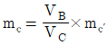
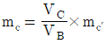
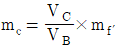
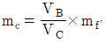
(정답률: 61%)
35. 콘크리트 재료 중 혼화제의 계량에 대한 허용오차로 옳은 것은?
- ±1%
- ±2%
- ±3%
- ±4%
(정답률: 85%)
36. 원기둥 콘크리트 공시체(지름 150mm, 길이 300mm)를 쪼갬 인장강도 시험하여 얻어진 최대 하중이 150KN일 때, 이 콘크리트의 인장강도로 알맞은 것은?
- 3.1MPa
- 3.0MPa
- 2.4MPa
- 2.1MPa
(정답률: 64%)
37. 콘크리트 재료인 천연 잔골재의 품질관리 항목 중 물리 화하가적 안정성*알칼리 실리카 반응성(의 시험시기 및 회수로 옳은 것은?
- 공사시작 전, 공사 중 1회/월 이상 및 산지가 바뀐 경우
- 공사시작 전, 공사 중 1회/년 이상
- 공사시작 전, 공사 중 1회/6개월 이상 및 산지가 바뀐 경우
- 공사 중 1회/월 이상
(정답률: 59%)
38. 보통중량골재를 사용한 콘크리트(mc=2300kg/m3)로 설계기준압축강도(fck)가 30MPa일 때 콘크리트의 탄성계수는 약 얼마인가?
- 27536MPa
- 26722MPa
- 24356MPa
- 23982MPa
(정답률: 49%)
39. 자재 품질관리에서 굵은 골재의 품질관리 항목에 속하지 않는 것은?
- 절대건조밀도
- 흡수율
- 물리 화학적 안정성
- 유기불문물
(정답률: 49%)
40. 굳지 않은 콘크리트의 성질을 알아보는 시험이 아닌 것은?
- 응결시간 시험
- 공기량 시험
- 슬럼프 시험
- 슈미트해머에 의한 반발경도 시험
(정답률: 82%)
3과목: 콘크리트의 시공
41. 포장콘크리트의 설계기준강도(f28)에 대한 설명으로 옳은 것은?
- 압축강도 30MPa 이상
- 압축강도 28MPa 이상
- 휭강도 4.5MPa 이상
- 휭강도 3.5 MPa 이상
(정답률: 64%)
42. 일평균기온 25℃에서 콘크리트 구조물 내구성 향상을 위해 고로슬래그 시멘트를 사용하여 교각 기초 콘크리트를 타설하였을 경우, 습윤양생기간의 표준은?
- 5일
- 7일
- 9일
- 12일
(정답률: 63%)
43. 서중콘크리트에 대한 설명으로 옳은 것은?
- 하루 최고 기온이 25℃를 초과하는 경우 서중콘크리트로 시공한다.
- 기온 10℃의 상승에 대해 단위수량은 1%정도 감소한다.
- 콘크리트를 타설할 때의 콘크리트 온도는 35℃ 이하여야 한다.
- 목재거푸집의 경우에는 거푸집까지 습윤상태로 하지 않아도 된다.
(정답률: 56%)
44. 경량골재 콘크리트에 대한 설명으로 틀린 것은?
- 슬럼프 값은 일반적인 경우 대체로 50~150mm를 표준으로 한다.
- 경량골재 콘크리트의 공기량은 일반 골재를 사용한 콘크리트보다 1% 작게 하여야 한다.
- 보통 콘크리트에 비해 진동기를 찔러 넣는 간격을 작게 하거나 진동시간을 약간 길게해 충분히 다져야 한다.
- 콘크리트의 수밀성을 기준으로 물-결합재비를 정할 경우 50% 이하를 표준으로 한다.
(정답률: 66%)
45. 매스 콘크리트를 타설할 때 한 층의 높이는 얼마를 표준으로 하는가?
- 0.1~0.2m
- 0.4~0.5m
- 0.9~1.0m
- 1.4~1.5m
(정답률: 61%)
46. 해양콘크리트로서 해중에 시공되며, 일반적인 현장시공인 경우 내구성에 의해 정해지는 공기현행 콘크리트의 최대 물-결합재미로 옳은 것은?
- 40%
- 45%
- 50%
- 55%
(정답률: 43%)
47. 고강도 콘크리트에 대한 설명으로 틀린 것은?
- 설계기준압축강도가 보통(중량)콘크리트에서 40MPa 이상, 경랑골재 콘크리트에서 24MPa 이상인 경우의 콘크리트를 말한다.
- 부배합즉, 단위시멘트량이 많기 때문에 시멘트 대체 재료인 플라이애쉬, 고로슬래그분말, 실리카 퓸 등을 사용한다.
- 굵은골재 최대수치는 40mm 이하로써 가능한 25mm 이하로 한다.
- 기상의 변화가 심하거나 동결융해에 대한 대책이 필요한 경우를 제외하고는 공기연행제를 사용하지 않는 것은 원칙으로 한다.
(정답률: 73%)
48. 유동화 콘크리트에 대한 일반적인 설명으로 틀린 것은?
- 유롱화 콘크리트의 슬럼프는 원칙적으로 180mm 이하로 한다.
- 유동화 콘크리트의 슬럼프 중가량은 100mm이하를 원칙으로 한다.
- 베이스 콘크리트의 슬럼프 최대값은 보통 콘크리트일 경우 150mm이하로 하여야 한다.
- 베이스 콘크리트의 슬럼프는 콘크리트의 유동화에 지장이 없는 범위의 것이어야 한다.
(정답률: 42%)
49. 특별한 조치를 취하지 않은 경우, 콘크리트의 비비기로부터 타설이 끝날 때까지의 제한 시간으로 맞게 기술된 것은?
- 외기온도가 25℃ 이상일때는 1.5시간, 25℃ 미만일 때에는 2시간을 넘어서는 안된다.
- 외기온도가 25℃ 이상일 때는 2시간, 25℃ 미만일 때에는 3시간을 넘어서는 안된다.
- 외기온도가 25℃ 이상일 때는 2시간, 25℃ 미만일 때에는 1.5시간을 넘어서는 안된다.
- 외기온도가 25℃ 이상일 때는 3시간, 25℃ 미만일 때에는 2시간을 넘어서는 안된다.
(정답률: 81%)
50. 콘크리트를 유해한 응력으로부터 소정의 강도가 발현되기까지 보호하는 것은 양생이란고 하며, 충분한 수분이 공급되도록 하여야 한다. 마약 콘크리트의 습윤양생이 충분하지 못한 경우 발생되는 현상으로 틀린 것은?
- 강도감소
- 건조수축
- 수밀성 저하
- 침하수축 감소
(정답률: 62%)
51. 일반콘크리트의 시공이음부를 철근으로 보강한 경우에 이형철근의 정착 길이는 철경의 몇 배로 하는가?
- 5배 이상
- 10배 이상
- 15배 이상
- 20배 이상
(정답률: 63%)
52. 콘크리트 공장제품에 관한 설명으로 옳지 않은 것은?
- 증기양생은 보통 비빈 후 2~3시간 이상 경과한 후에 실시한다.
- 공장제품의 성형에서 일반적으로 사용되고 있는 다지기 방법에는 진동다지기, 원심력다지기, 가압다지기, 진공다지기 및 이들을 병용하는 방법이 있다.
- PS강재에는 스트럽 또는 가외철근 등을 용접하지 않는 것을 원칙으로 한다.
- 프리스트레스트콘크리트 제품에는 재생골재를 사용함을 원칙으로 한다.
(정답률: 75%)
53. 다음은 프리플레이스트 콘크리트의 압송에 대한 설명이다. ()안에 들어가는 기준값으로 옳은 것은?
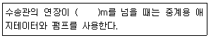
- 40
- 70
- 100
- 130
(정답률: 72%)
54. 공장 제품에 사용하는 콘크리트의 강도는 재령 며칠에서의 압축강도 시험 값으로 나타내는 것을 원칙으로 하는가? (단, 일반적인 공장 제품의 경우)
- 7일
- 14일
- 28일
- 91일
(정답률: 80%)
55. 한중콘크리트에 관한 설명으로 틀린 것은?
- 콘크리트의 배합 온도를 높이기 위하여 시멘트를 가열하는 것은 금지되어 있다.
- 타설 시의 콘크리트 온도는 동결을 방지하기위하여 0~10℃의 법위에서 정한다.
- 물-결합재비는 원칙적으로 60% 이하로 하여야 한다.
- 공기연행 콘크리트를 사용하는 것을 원칙으로 한다.
(정답률: 55%)
56. 현장 콘크리트 타설 시의 다지기에 대한 설명으로 옳지 않은 것은?
- 재 진동을 할 경우에는 반드시 초결이 일어난 후에 실시하여야 한다.
- 콘크리트 다지기는 내부진동기의 사용을 원칙으로 한다.
- 내부진동기의 삽입간격은 일반적으로 0.5m이하로 하는 것이 좋다.
- 얇은 벽과 같이 내부진동기의 사용이 곤란한 장소에서는 거푸집 진동기를 사용한다.
(정답률: 68%)
57. 수증콘크리트 비비기에 대한 설명으로 틀린 것은?
- 수중불분리성 콘크리트의 비비기는 제조설비가 갖춰진 플랜트에서 물을 투입하기 전 건식으로 20~30초를 비빈 후 전 재료를 투입하여 비비기를 하여야 한다.
- 가경식 믹서를 이용하는 경우 드럼 내부에 콘크리트가 부착되어 충분히 비벼지지 못할 경우가 있기 때문에 강제식 배치믹서를 이용하여야 한다.
- 수증불분리성 콘크리트의 경우 소요품질의 콘크리트를 얻기 위하여 1회 비비기 양은 믹서의 공칭용량의 80%이하로 하여야 한다.
- 비비기는 미리 정해둔 비비기 시간의 5배 이상 계속하지 않아야 한다.
(정답률: 75%)
58. 고강도 콘크리트용 골재의 품질기준에 대한 설명으로 틀린 것은?
- 굵은골재 절건밀도 2.5g/cm3 이상
- 잔골재 흡수율 2.0% 이하
- 굵은골재 실적률 59% 이상
- 잔골재중의 점토량 1.0% 이하
(정답률: 35%)
59. 숏크티르용 급결제에 대한 설명 중 틀린 것은?
- 실리케이트계 급결제는 장기강도 확보에 불리하다.
- 알루미네이트계는 인체에 유해하므로 취급에 유의한다.
- 일반적으로 액상형 급결제는 분말형 급결제에 비하여 반응성, 혼합성이 우수하고 분진발생량이 적은 장점이 있다.
- 우리나라에서 가장 많이 사용되는 급결제는 시멘트분말계이다.
(정답률: 68%)
60. 숏크리트의 시공에서 건식 숏크리트는 배치 후 몇 분 이내에 뿜어붙이기를 실시하여야 하는가?
- 15분
- 30분
- 45분
- 60분
(정답률: 67%)
4과목: 콘크리트 구조 및 유지관리
61. 보통중량 골재를 사용한 콘크리트의 설계기준 압축강도가 28MPa로 제작되는 보에서 압축이형철근으로 D29(공칭지름 28.6mm)를 사용한다면 기본정착길이는?(오류 신고가 접수된 문제입니다. 반드시 정답과 해설을 확인하시기 바랍니다.)
- 473mm
- 512mm
- 584mm
- 627mm
(정답률: 17%)
62. 콘크리트 초기균열 중 침하균열을 방지하기 위한 대책으로 틀린 것은?
- 타설속도를 빠르게 한다.
- 단위수량을 될 수 있는 한 적게 한다.
- 슬럼프가 작은 콘크리트를 잘 다짐해서 시공한다.
- 1회 타설높이를 작게 한다.
(정답률: 63%)
63. 보강공법이 아닌 것은?
- 강판접착공법
- 단면 증설공법
- 탄소섬유시트 접착공법
- 충전공법
(정답률: 59%)
64. 아래 그림과 같은 복철근 보의 탄성처짐이 12mm라고 할 때 5년 후 지속하중에 의해 유발되는 장기처짐은 얼마인가? (단, 5년 후 지속하중 재하에 따른 계수=2.0)
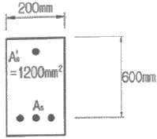
- 12mm
- 14mm
- 16mm
- 18mm
(정답률: 55%)
65. 프리스트레스 손실 원인 중 프리스트레스 도입 즉시 발생하는 것이 아닌 것은?
- 콘크리트의 크리프
- 정착장치의 활동
- 콘크리트의 탄성수축
- 포스트텐션 긴장재와 덕트사이의 마찰
(정답률: 58%)
66. 철근 부식에 따른 2차적 손상이 아닌 것은?
- 박리
- 박락
- 재료분리
- 균열
(정답률: 75%)
67. 콘크리트 크리프에 대한 설명으로 틀린 것은?
- 콘크리트에 일정한 하중을 지속적으로 재하하면 응력은 늘리 않았는데 변형이 계속 진행되는 현상을 말한다.
- 재하응력이 클수록 크리프가 크다.
- 조직이 치밀한 콘크리트일수록 크리프가 크다.
- 조강시멘트는 보통시멘트보다 크리프가 작다.
(정답률: 50%)
68. 콘크리트의 설계기준압축강도 fcf는 35Mpa, 철근의 항복강도 fy는 400MPa인 단철근 직사각형보를 강도설계법에 의해 설계할 때 균형철근비는?
- 0.0327
- 0.0357
- 0.0379
- 0.0399
(정답률: 43%)
69. 콘크리트의 탄산화 깊이를 조사하기 위해 사용되는 것은?
- 수산화나트륨
- 페놀프탈레인 용액
- 무수황산나트륨
- 아황산용액
(정답률: 83%)
70. 콘크리트 구조물의 외관조사 중 육안조사에 의한 조사항목에 속하지 않는 것은?
- 균열
- 철근노출
- 부재의 응력
- 침하
(정답률: 73%)
71. 콘크리트 구조물의 외관조사 시 외관조사망도에 기입하지 않는 것은?
- 균열 형태
- 균열 깊이
- 균열 길이
- 균열 폭
(정답률: 76%)
72. 콘크리트의 내구성에 대한 설명으로 틀린 것은?
- 알칼리골재반응을 억제하기 위해 충분한 수분을 공급한다.
- 알칼리골재반응을 억제하기 위해 알칼리 이온 총량을 규제한다.
- 콘크리트의 탄산화 속도는 온도가 높아질수록 빨라진다.
- 콘크리트의 탄산화 속도는 공기 중의 탄산가스의 농도가 높을수록 빨라진다.
(정답률: 62%)
73. 강도설계법으로 설계 시 기본 가정에 어긋나는 것은?
- 철근과 콘크리트의 변형률은 중립축에서의 거리에 비례한다.
- 콘크리트 압축측 상단의 극한 변형률은 0.003으로 가정한다.
- 철근 변형률이 항복변형률 이상일 때 철근의 응력은 변형률에 관계없이 fy와 같다고 가정한다.
- 휨 응력 계산에서 콘크리트의 인장강도는 압축강도의 1/10으로 계산한다.
(정답률: 49%)
74. 균열보수공법 중에서 주입공법에 사용되는 에폭시 수지의 특징에 대한 설명 중 옳지 않은 것은?
- 접착강도가 크며, 경화시 수축이 거의 없다.
- 미세한 균열에도 주입이 가능하다.
- 경화 후의 에폭시 수지는 안정된 화학적 성질을 얻을 수 있다.
- 산소 및 수분의 차단이 어렵고, 특히 콘크리트의 중성화에 취약하다.
(정답률: 53%)
75. 직사각형 단철근보에서 전달철근을 사용하지 않고 콘크리트만으로 ｕu=80kN의 계수 전단강도를 지지하려고 할 때, 최소 유효깊이(d)는? (단, fck=30MPa, fy=400MPa, bω=350mnm)
- 534mm
- 668mm
- 721mm
- 810mm
(정답률: 39%)
76. 아래 그림과 같은 단철근 직사각형 보에서 균형단면이 되기 위한 중립축의 깊이 Cb와 유효깊이 d의 비는? (단, fck=24MPa, fy=350MPa)
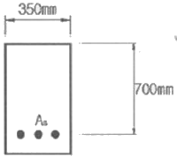
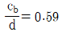
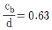
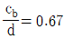
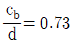
(정답률: 54%)
77. 콘크리트의 동해로 인한 열화 발생 시의 보수공법과 거리가 먼 것은?
- 표면보호공법
- 균열주입공법
- 단면복구공법
- 전기방식법
(정답률: 62%)
78. 부재 단면에 적용하는 강도감수계수(ø)의 값으로 틀린 것은?
- 띠철근으로 보강된 철근콘크리트 부재의 압축지배 단면:0.70
- 인장지배 단면:0.85
- 포스트텐션 정착구역:0.85
- 전단력과 비틀림 모멘트:0.75
(정답률: 57%)
79. 그림과 같은 T형단면에 3-D35(As=2870mm2)의 철근이 배근되었다면 공청휨강도 Mn의 크기는? (단, fck=18MPa, fy=350MPa이다.)
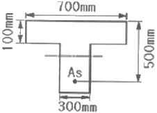
- 455.1KNㆍm
- 386.9KNㆍm
- 349.0KNㆍm
- 333.5KNㆍm
(정답률: 48%)
80. 콘크리트 구조물의 철근 부식 상황을 파악하는데 적절하지 않은 방법은?
- 자연 전위법
- 분극 저항법
- 자분 탐상법
- 전기 저항법
(정답률: 60%)
조립률을 구하기 위해 80mm~0.08mm체까지 전체 8개의 체가 필요한 이유는, 잔골재의 입도분포를 파악하기 위해서는 다양한 크기의 입자들을 모두 고려해야 하기 때문이다. 이를 위해 일정한 간격으로 크기가 다른 체를 사용하여 시료를 걸러내고, 걸러진 입자들의 비율을 계산하여 조립률을 구한다. 이를 위해 80mm, 40mm, 20mm, 10mm, 5mm, 2.5mm, 1.2mm, 0.08mm 크기의 체가 필요하다.